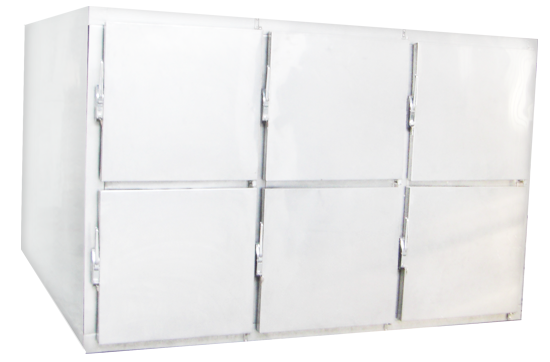
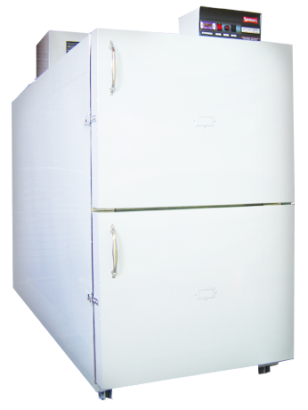
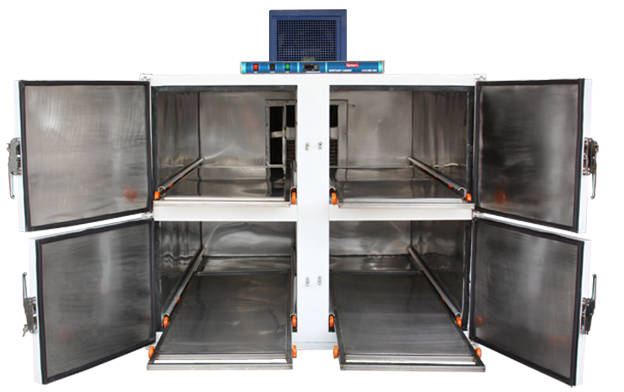
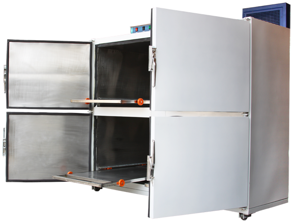

Custom Capacity/Temperature Available on Demand
Spencers Mortuary cabinets are quality constructed self-contained mortuary refrigerators used in funeral directors & Hospitals. SPENCERS body storage cabinets have been specially designed to offer an extremely compact and cost effective solution to the exact hygiene requirements demanded by current legislation.

Built with top grade materials added to finest levels of quality construction and reliability. SPENCERS Mortuary freezers are designed to fit your space and to meet your cadaver storage needs for both short & long time periods. A vast range of styles and designs are available tailored to your own requirements.

Exclusive Standards:
- Customized styles & Design.
- Dependability, low maintenance & Value.
- Accurate temperature control and holdover capability.
- Excellent temperature stability and homogeneity.
- Spencers superior refrigeration system.

Robust Features:
- Microprocessor based temperature control system.
- Microprocessor based digital display.
- Audio-visual High & low temperature alarms.
- Interior vapor proof fluorescent lighting.

Capacity & Temperature:
- Nine Body Storage Capacity.
- +2 °C to +8 °C

Capacity & Temperature Selections:
- Custom made body storage Capacity as per requirements
- Various temperature range as per requirements
Feature Selections (Optional):
- Body Lifting cum Transport trolley.
- Back up refrigeration system
- Voltage safety system (Servo Stabilizer)
- Rechargeable battery backup for control panel.
- Rechargeable battery backup for alarm system
- TFT touch screen based temperature control, monitoring & recording system with temperature data records (365 days data recording) in tabular & graphical formats on screen. USB (pen drive) & PC interface for data download. Optional printer port for temperature data print.
Construction Selections:
- Pre-assembled/Modular ready to plug & operate.
- Pre-fabricated panels & units ready to install & operate.
Features:
Cabinet Construction: SPENCERS maintains finest levels of quality construction designed detail by detail to meet your most exact requirements. The cabinet construction is so beautifully planned to meet the most complex service space & minimum room length requirements. Available in pre-assembled modular construction
Outer: Outer is made of Galvanized Sheet of suitable thickness & grade finished with bacteria resistant coating.
Interior: Durable Stainless Steel (SS-304) interiors to give better life and makes cleaning easy providing hygienic conditions and great sturdiness.
Insulation: Safe, high density, non-settling & Thick polyurethane insulation of 80 mm.
Doors: Standard hinged doors for individual cells with easy grip handle.
Floor & Frame: Recessed Floor & superior engineered frame.
Racks & Trays: Sturdy built in SS framed Rack system with railings for easy movement of SS trays with castors constructed for heavy duty use.
Castors: Dual heavy duty castors for easy movement of the mortuary cabinet.
Refrigeration: Strong and reliable with powerful quick response refrigeration which runs on demand, an exclusive long life SPENCERS superior refrigeration process is a unique feature of SPENCERS Mortuary freezers. Salient features include: Heavy duty Air-cooled compressor. Highly efficient air-cooled finned condenser with automatic condensate evaporating system. Internal evaporator system. Non-CFC/non-HCFC environmental friendly refrigerant. Forced air circulation maintains chamber uniformity.
Temperature Control: The unit is fitted with a micro-processor based digital electronic temperature controller cum indicator for easy readability along with audible alarm system. The electronic management system allows setting the temperature as required as per the standard temperature range of the Mortuary cabinet.
Alarms: In Built High & Low temperature alarms are usually incorporated in all the models of SPENCERS Mortuary Freezers.